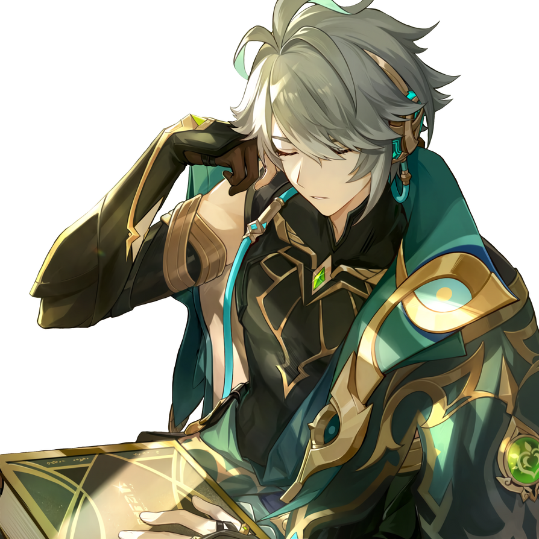

ALHAITAM
Alhaitham is a playable Dendro character in Genshin Impact.
Alhaitham is a member of the Haravatat of the Sumeru Akademiya and the Akademiya's Scribe, responsible for documenting their findings and drafting ordinances. Despite his brilliance, people within the Akademiya are perplexed by Alhaitham due to his unwillingness to aspire for higher office in spite of his egocentricity, and many have been at odds with him for his uncompromising view on rationality and the truth.
